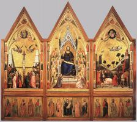
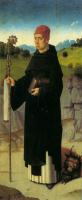
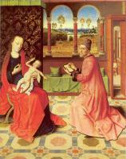

index
/
Русский
Сюжети Старого Завета
|
Сюжеты Нового Завета
Алтарь Святого Таинства
Дирк Баутс cтарший
, 1464-67
фрагменты
Сюжети Старого Завета
Сюжеты Нового Завета

Дирк Баутс cтарший


English
|
Русский
|
Українська